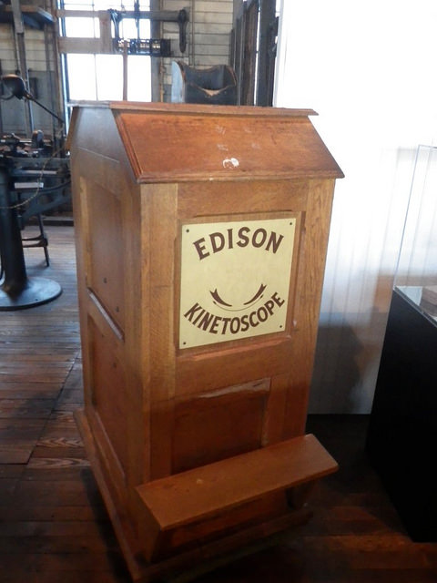

Em 1891, o inventor Thomas Edison, junto com William Dickson, um jovem assistente de laboratório, saiu com o que eles chamaram cinetoscópio,um dispositivo que se tornaria o predecessor do projetor de filmes cinematográficos.
O kinetoscópio era um armário com uma janela através da qual os espectadores podiam experimentar a ilusão de uma imagem em movimento tira de filme de celulóide com uma seqüência de imagens, foi rapidamente enrolada entre uma lâmpada e uma lente, criando a ilusão de movimento.

Os visualizadores de imagens puderam ver no cinetoscópio os eventos capturados e performances que haviam sido encenadas no estúdio de Edison em East Orange, Nova Jersey.especialmente performances de circo, dançarinas, brigas de galos, lutas de boxe, e até uma extração dentária por um dentista.
À medida que o kinetoscópio ganhou popularidade, Edison Company começou a instalar máquinas em lobbies de hotéis, parques de diversão e fliperamas, e logo os chamados "salões de kinetoscópio" - onde os clientes podiam pagar cerca de 25 centavos por um banco de máquinas - foram abertos em todo o país.
No entanto, quando amigos e colaboradores sugeriram que Edison encontrasse uma maneira de projetar suas imagens do kinetoscópio para a audiência, ele aparentemente recusou, alegando que tal invenção seria um empreendimento menos lucrativo.
Como Edison não havia conseguido uma patente internacional para sua invenção, variações do cinetoscópio logo foram copiadas e distribuídas pela Europa.
Essa nova forma de entretenimento foi um sucesso instantâneo, e vários mecânicos e inventores, vendo uma oportunidade, começaram a brincar com métodos de projetar as imagens em movimento em uma tela maior. No entanto, foi a invenção de dois irmãos, Auguste e Louis Lumière - fabricantes de produtos fotográficos em Lyon, na França - que tiveram o maior sucesso comercial.
Em 1895, os irmãos patentearam o cinématographe (do qual obtemos o termo cinema), um projetor de filme leve que também funcionava como câmera e impressora. Ao contrário do cinetógrafo de Edison, o cinématografo era leve o suficiente para facilitar as filmagens externas, e ao longo dos anos os irmãos usaram a câmera para fazer mais de mil curtas-metragens, a maioria dos quais retratava cenas da vida cotidiana.
Em dezembro de 1895, no lounge do porão do Grand Café, Rue des Capucines, em Paris, a Lumières realizou a primeira exibição de filmes comerciais do mundo, uma sequência de cerca de 10 cenas curtas, incluindo o primeiro filme do irmão, Workers Leaving the Lumière Factory, um segmento que dura menos de um minuto e retrata os trabalhadores que saem da fábrica de instrumentos fotográficos da família no final do dia.
Acreditando que o público ficaria entediado assistindo cenas que eles poderiam facilmente observar em um passeio casual pela cidade, Louis Lumière afirmou que o cinema era "uma invenção sem futuro, mas a demanda por filmes cresceu num ritmo tão rápido que em pouco tempo os representantes da companhia Lumière viajavam pela Europa e pelo mundo, mostrando as exibições de meia hora dos filmes da empresa.
Enquanto o cinema inicialmente competia com outras formas populares de entretenimento - circos, teatros, shows de mágica e muitos outros - acabaria por suplantar esses vários entretenimentos como a principal atração comercial.
Um ano após a primeira exibição comercial da Lumières, empresas de filmes concorrentes ofereciam bandas de cinema em salas de música e teatros de vaudeville em toda a Grã-Bretanha.
Nos Estados Unidos, Edison Company, tendo adquirido os direitos de um projetor melhorado que chamaram de Vitascope e realizou sua primeira exibição de filmes em abril de 1896 no Koster e no Bial's Music Hall em Herald Square, Nova York.